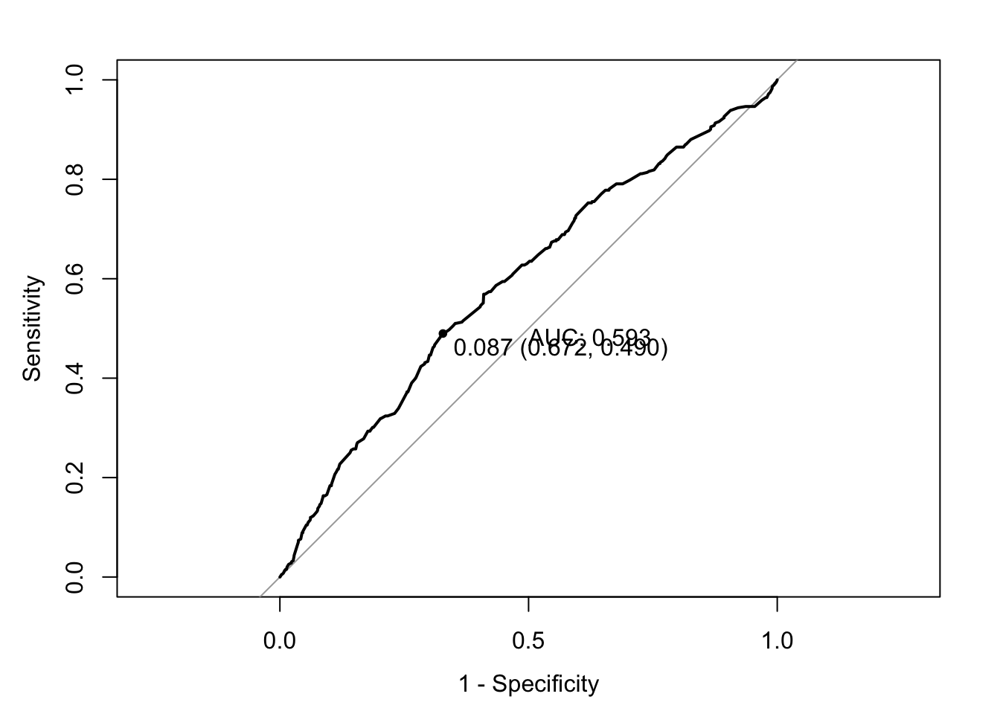

library(tidyverse)
library(openintro)
library(caret)
library(pROC)
data("resume")IDS 702 HW 4
Instructions: Use this template to complete your assignment. When you click “Render,” you should get a PDF document that contains both your answers and code. You must show your work/justify your answers to receive credit. Submit your rendered PDF file on Gradescope. Remember to render frequently, as this will help you to catch errors in your code before the last minute. You must show your work for all problems, and you must provide a written answer for all problems; it is insufficient to just show the code.
Add your name in the Author section in the header
Load data
1
a.
resume <- resume |>
mutate(
received_callback_fac = factor(received_callback,
levels=c(0,1),
labels=c("No","Yes")),
race_fac = factor(race),
gender_fac = factor(gender),
college_degree_fac = factor(college_degree,
levels=c(0,1),
labels=c("No","Yes")),
resume_quality_fac = factor(resume_quality)
)
resume |>
count(received_callback, received_callback_fac)# A tibble: 2 × 3
received_callback received_callback_fac n
<dbl> <fct> <int>
1 0 No 4478
2 1 Yes 392resume |>
count(race, race_fac)# A tibble: 2 × 3
race race_fac n
<chr> <fct> <int>
1 black black 2435
2 white white 2435resume |>
count(gender, gender_fac)# A tibble: 2 × 3
gender gender_fac n
<chr> <fct> <int>
1 f f 3746
2 m m 1124resume |>
count(college_degree, college_degree_fac)# A tibble: 2 × 3
college_degree college_degree_fac n
<dbl> <fct> <int>
1 0 No 1366
2 1 Yes 3504resume |>
count(resume_quality, resume_quality_fac)# A tibble: 2 × 3
resume_quality resume_quality_fac n
<chr> <fct> <int>
1 high high 2446
2 low low 2424b.
resume |>
count(race_fac) |>
mutate(prop=n/sum(n))# A tibble: 2 × 3
race_fac n prop
<fct> <int> <dbl>
1 black 2435 0.5
2 white 2435 0.5resume |>
group_by(received_callback_fac) |>
count(race_fac) |>
mutate(prop=n/sum(n))# A tibble: 4 × 4
# Groups: received_callback_fac [2]
received_callback_fac race_fac n prop
<fct> <fct> <int> <dbl>
1 No black 2278 0.509
2 No white 2200 0.491
3 Yes black 157 0.401
4 Yes white 235 0.599resume |>
count(gender_fac) |>
mutate(prop=n/sum(n))# A tibble: 2 × 3
gender_fac n prop
<fct> <int> <dbl>
1 f 3746 0.769
2 m 1124 0.231resume |>
group_by(received_callback_fac) |>
count(gender_fac) |>
mutate(prop=n/sum(n))# A tibble: 4 × 4
# Groups: received_callback_fac [2]
received_callback_fac gender_fac n prop
<fct> <fct> <int> <dbl>
1 No f 3437 0.768
2 No m 1041 0.232
3 Yes f 309 0.788
4 Yes m 83 0.212resume |>
count(college_degree_fac) |>
mutate(prop=n/sum(n))# A tibble: 2 × 3
college_degree_fac n prop
<fct> <int> <dbl>
1 No 1366 0.280
2 Yes 3504 0.720resume |>
group_by(received_callback_fac) |>
count(college_degree_fac) |>
mutate(prop=n/sum(n))# A tibble: 4 × 4
# Groups: received_callback_fac [2]
received_callback_fac college_degree_fac n prop
<fct> <fct> <int> <dbl>
1 No No 1251 0.279
2 No Yes 3227 0.721
3 Yes No 115 0.293
4 Yes Yes 277 0.707resume |>
count(resume_quality_fac) |>
mutate(prop=n/sum(n))# A tibble: 2 × 3
resume_quality_fac n prop
<fct> <int> <dbl>
1 high 2446 0.502
2 low 2424 0.498resume |>
group_by(received_callback_fac) |>
count(resume_quality_fac) |>
mutate(prop=n/sum(n))# A tibble: 4 × 4
# Groups: received_callback_fac [2]
received_callback_fac resume_quality_fac n prop
<fct> <fct> <int> <dbl>
1 No high 2232 0.498
2 No low 2246 0.502
3 Yes high 214 0.546
4 Yes low 178 0.454resume |>
summarise(mean(years_experience), sd(years_experience))# A tibble: 1 × 2
`mean(years_experience)` `sd(years_experience)`
<dbl> <dbl>
1 7.84 5.04resume |>
group_by(received_callback_fac) |>
summarise(mean(years_experience), sd(years_experience))# A tibble: 2 × 3
received_callback_fac `mean(years_experience)` `sd(years_experience)`
<fct> <dbl> <dbl>
1 No 7.75 4.99
2 Yes 8.89 5.54| Variable | Overall 4870 |
Received Callback 392 (8) |
Did not receive callback 4478 (92) |
|---|---|---|---|
Race Black - N (%) White - N (%) |
2435 (50) 2435 (50) |
157 (40) 235 (60) |
2278 (51) 2200 (49) |
Gender Female - N (%) Male - N (%) |
3746 (77) 1124 (23) |
309 (79) 83 (21) |
3437 (77) 1041 (23) |
| Has college degree - N (%) | 3504 (72) | 277 (71) | 3227 (72) |
Resume Quality Low - N (%) High - N (%) |
2424 (50) 2446 (50) |
178 (45) 214 (55) |
2246 (50) 2232 (50) |
| Years of experience - mean (SD) | 7.8 (5) | 8.9 (5.5) | 7.8 (5) |
Takeaways: Most variables do not seem to have a big difference when it comes to receiving callbacks. The exception to this is race. While White applicants make up 50% of the experimental sample, they receive 60% of the callbacks. Callback rates align with the overall sample for gender. Interestingly, resume quality seems to have little effect, with low quality resumes receiving 45% of the callbacks.
2
a.
resume_mod1 <- glm(received_callback_fac ~
race_fac + gender_fac + college_degree_fac +
resume_quality_fac + years_experience,
data=resume,
family="binomial")
summary(resume_mod1)
Call:
glm(formula = received_callback_fac ~ race_fac + gender_fac +
college_degree_fac + resume_quality_fac + years_experience,
family = "binomial", data = resume)
Deviance Residuals:
Min 1Q Median 3Q Max
-0.7114 -0.4368 -0.3955 -0.3403 2.5010
Coefficients:
Estimate Std. Error z value Pr(>|z|)
(Intercept) -2.870703 0.155563 -18.454 < 2e-16 ***
race_facwhite 0.439892 0.107573 4.089 4.33e-05 ***
gender_facm -0.106411 0.131915 -0.807 0.420
college_degree_facYes -0.027668 0.119050 -0.232 0.816
resume_quality_faclow -0.153108 0.106616 -1.436 0.151
years_experience 0.037576 0.009286 4.047 5.20e-05 ***
---
Signif. codes: 0 '***' 0.001 '**' 0.01 '*' 0.05 '.' 0.1 ' ' 1
(Dispersion parameter for binomial family taken to be 1)
Null deviance: 2726.9 on 4869 degrees of freedom
Residual deviance: 2690.3 on 4864 degrees of freedom
AIC: 2702.3
Number of Fisher Scoring iterations: 5exp(coefficients(resume_mod1)) (Intercept) race_facwhite gender_facm
0.05665908 1.55253916 0.89905501
college_degree_facYes resume_quality_faclow years_experience
0.97271142 0.85803734 1.03829139 b.
exp(confint(resume_mod1)) 2.5 % 97.5 %
(Intercept) 0.04160769 0.07657934
race_facwhite 1.25878536 1.91963993
gender_facm 0.69064530 1.15904435
college_degree_facYes 0.77226785 1.23202030
resume_quality_faclow 0.69577756 1.05706389
years_experience 1.01922849 1.05704813c.
Gender, having a college degree, and resume quality are not statistically significantly associated with receiving a resume callback (p=0.4, 0.8, and 0.2, respectively). The odds of receiving a callback are 1.6 times higher for White applicants compared to Black applicants, and this is statistically significant (p<0.001, 95% CI: [1.3, 1.9]). Years of experience is also significantly associated with receiving a callback; per additional year of experience, the odds of receiving a callback increase by 4% (p<0.001, 95% CI: [1.01,1.06]).
3
a.
resume_mod2 <- glm(received_callback_fac ~
race_fac*gender_fac + college_degree_fac +
resume_quality_fac + years_experience,
data=resume,
family="binomial")
summary(resume_mod2)
Call:
glm(formula = received_callback_fac ~ race_fac * gender_fac +
college_degree_fac + resume_quality_fac + years_experience,
family = "binomial", data = resume)
Deviance Residuals:
Min 1Q Median 3Q Max
-0.7115 -0.4369 -0.3955 -0.3402 2.5014
Coefficients:
Estimate Std. Error z value Pr(>|z|)
(Intercept) -2.870419 0.159501 -17.996 < 2e-16 ***
race_facwhite 0.439443 0.121104 3.629 0.000285 ***
gender_facm -0.107688 0.206252 -0.522 0.601587
college_degree_facYes -0.027679 0.119059 -0.232 0.816162
resume_quality_faclow -0.153111 0.106617 -1.436 0.150979
years_experience 0.037575 0.009287 4.046 5.21e-05 ***
race_facwhite:gender_facm 0.002126 0.263788 0.008 0.993571
---
Signif. codes: 0 '***' 0.001 '**' 0.01 '*' 0.05 '.' 0.1 ' ' 1
(Dispersion parameter for binomial family taken to be 1)
Null deviance: 2726.9 on 4869 degrees of freedom
Residual deviance: 2690.3 on 4863 degrees of freedom
AIC: 2704.3
Number of Fisher Scoring iterations: 5exp(coefficients(resume_mod2)) (Intercept) race_facwhite gender_facm
0.05667517 1.55184335 0.89790738
college_degree_facYes resume_quality_faclow years_experience
0.97270019 0.85803441 1.03828999
race_facwhite:gender_facm
1.00212781 exp(confint(resume_mod2)) 2.5 % 97.5 %
(Intercept) 0.0412839 0.07716664
race_facwhite 1.2255380 1.97099631
gender_facm 0.5904001 1.32864260
college_degree_facYes 0.7722465 1.23202719
resume_quality_faclow 0.6957741 1.05706202
years_experience 1.0192243 1.05704996
race_facwhite:gender_facm 0.5999197 1.69138564The reference group is Black females. Let \(x_1=1\) for race=White, 0=Black; \(x_2=1\) for gender=male, 0=female.
For White males, \(x_1=1\) and \(x_2=1\), so the log odds of receiving a callback = 0.44-0.11+0.002=0.332, so the odds of receiving a callback are \(exp(0.332)=1.4\).
For White females, \(x_1=1\) and \(x_2=0\), so the log odds of receiving a callback=0.44, so the odds of receiving a callback are \(exp(0.44)=1.6\).
For Black males, \(x_1=0\) and \(x_2=1\), so the log odds of receiving a callback = -0.11, so the odds of receiving a callback are \(exp(-0.11)=0.9\)
For Black females, \(x_1=0\) and \(x_2=0\), so the log odds of receiving a callback = -2.9 (the intercept!), so the odds of receiving a callback are \(exp(-2.9)=0.06\)
So, White females have the highest odds of receiving a callback.
b.
resumemod_preds <- ifelse(predict(resume_mod2, type="response")>0.5,1,0)
resumemod_preds_fac <- factor(resumemod_preds,
levels=c(0,1),
labels=c("No", "Yes"))
confusionMatrix(table(resumemod_preds_fac, resume$received_callback_fac),
positive="Yes",
mode="everything")Confusion Matrix and Statistics
resumemod_preds_fac No Yes
No 4478 392
Yes 0 0
Accuracy : 0.9195
95% CI : (0.9115, 0.927)
No Information Rate : 0.9195
P-Value [Acc > NIR] : 0.5134
Kappa : 0
Mcnemar's Test P-Value : <2e-16
Sensitivity : 0.00000
Specificity : 1.00000
Pos Pred Value : NaN
Neg Pred Value : 0.91951
Precision : NA
Recall : 0.00000
F1 : NA
Prevalence : 0.08049
Detection Rate : 0.00000
Detection Prevalence : 0.00000
Balanced Accuracy : 0.50000
'Positive' Class : Yes
Using the 0.5 threshold, no observations are predicted to get a callback. Although the accuracy is high (0.92), the kappa is 0 due to the imbalance in the data (only 8% receive a callback).
c.
roc(resume$received_callback_fac, predict(resume_mod2, type="response"),
print.thres="best",
print.auc=T,
legacy.axes=T,
plot=T)
Call:
roc.default(response = resume$received_callback_fac, predictor = predict(resume_mod2, type = "response"), plot = T, print.thres = "best", print.auc = T, legacy.axes = T)
Data: predict(resume_mod2, type = "response") in 4478 controls (resume$received_callback_fac No) < 392 cases (resume$received_callback_fac Yes).
Area under the curve: 0.5931resumemod_preds_bestthres <- ifelse(predict(resume_mod2, type="response")>0.087,1,0)
resumemod_preds_fac_bestthres <- factor(resumemod_preds_bestthres,
levels=c(0,1),
labels=c("No", "Yes"))
confusionMatrix(table(resumemod_preds_fac_bestthres,
resume$received_callback_fac),
positive="Yes",
mode="everything")Confusion Matrix and Statistics
resumemod_preds_fac_bestthres No Yes
No 3010 200
Yes 1468 192
Accuracy : 0.6575
95% CI : (0.644, 0.6708)
No Information Rate : 0.9195
P-Value [Acc > NIR] : 1
Kappa : 0.0654
Mcnemar's Test P-Value : <2e-16
Sensitivity : 0.48980
Specificity : 0.67218
Pos Pred Value : 0.11566
Neg Pred Value : 0.93769
Precision : 0.11566
Recall : 0.48980
F1 : 0.18713
Prevalence : 0.08049
Detection Rate : 0.03943
Detection Prevalence : 0.34086
Balanced Accuracy : 0.58099
'Positive' Class : Yes
We now have observations that were predicted to receive a callback. The accuracy decreased, but the kappa increased. The sensitivity and specificity are fairly low at 0.49 and 0.67, respectively. Given that the AUC is 0.58, this may not be a great model for prediction, but we can still trust our inferences!